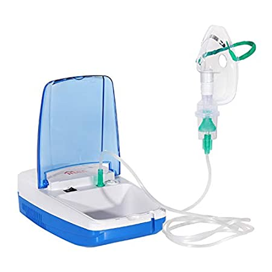

 A nebulizer is a device that turns the liquid medicine into a mist which is then inhaled through a mouthpiece or a mask. Sometimes asthma medication is given through a nebulizer as well, so this information can benefit people living with asthma too. A nebulizer treatment may help reduce inflammation in the lungs or open airways, especially in the case of respiratory illnesses like asthma. Nebulizer treatments may also benefit people with other respiratory diseases like COPD who have lung-related complications from a cold or flu.
There are 3 main parts of your nebuliser:
Most nebulizers work by using air compressors to create the mist containing the medicine. A different kind, called an ultrasonic nebulizer, uses sound vibrations. Nebulizers are commonly used to treat respiratory conditions such as asthma, chronic obstructive pulmonary disease (COPD), and cystic fibrosis. They are particularly useful for people who have difficulty using inhalers, such as young children or older adults. Nebulizers are also often used in hospital settings to deliver medication to critically ill patients who cannot inhale medication on their own.
There are three main types of nebulizers: